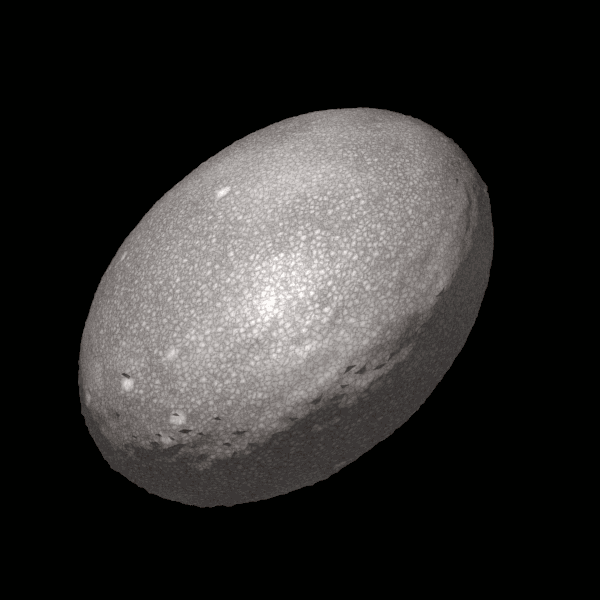

Haumea
Haumea is the third largest dwarf planet.
It was discovered in 2004.
It is named after the Hawaiian goddess of fertility.
It takes four hours to complete a rotation around it's axis, causing it's shape to be an ellipsoid.
Haumea has the first known ring system of a trans-neptunian object.
There are two moons orbiting Haumea - Hiʻiaka and Namaka.
The fast rotation, ring system and two satellites are likely a result from a collision event that has also created a family of related TNOs.
Haumea was first discovered by Mike Brown, Chad Trujillo, and David Rabinowitz in December 2004 at the Palomar observatory in California, from imgaes taken earlier in May at the Cerro Tololo Inter-American Observatory in Chile.
At the time, this team was searching for large objects beyond the orbit of Neptune, suspecting that Pluto was not the only similarly-sized body there.
They found partial success with the discovery of objects like Quaoaor, Sedna, and Orcus in 2002, 2003 and 2004 respectively.
After their discovery of Haumea, the team also found two other large objects in January and March 2005 - Eris and Makemake.
These three were larger than any other object in this region except Pluto, though Eris was initially thought to be larger.
During that time, a team led by José Luis Ortiz Moreno at the Sierra Nevada Observatory in Spain claimed to have discovered Haumea on images taken in October 2003.
They announced ther discovery to the Minor Planet Center on July 27 2005.
Brown suspected the team of fraud after finding out that the Sierra Nevada observatory had accessed his team's logs, so they could precover Haumea in older imagery.
This prompted Brown's team to announce the three new discoveries (including Haumea) earlier than anticipated on July 29.
With the three new discoveries challenging the status of Pluto, a proposition to redefine what a planet is, and with it a new class of objects known as "dwarf planets", was submitted to the IAU.
The new definition would exclude Pluto and the three new objects from "planethood".
A resolution was passed in 2006, endorsing the new proposition.
The decision was controversial among the public due to people, which knew Pluto as a planet their whole life, perceived the change as a "demotion".
Mike Brown's team later discovered two moons at the Keck Observatory on Mauna Kea, Hawai'i.
Haumea is named after the Hawaiian goddess of fertility.
This name was suggested by Brown's team, after dicovering the two moons in Hawai'i.
Originally, the right to name Haumea was given to the Ortiz-led team, but their suggestion - the Iberian goddess of the underworld Ataecina - was rejected for not conforming to the naming conventions of the IAU.
Such names of underworld deities were accepted only for plutinos, while other TNOs are given mythological names, particularly those of deities of creation.
Orbit and rotation
It takes Haumea 284 Earth years to make one trip around the Sun.
Haumea also has a perihelion of 35 AU, an eccentricity of 0.2, and an orbital inclination of 28°.
The axial tilt is estimated at 126°, making the equatorial plane nearly perpendicular to that of Eart's.
It is also nearly coplanar with Hi'iaka and the ring.
As Haumea orbits the Sun, it completes one rotation every 3.9 hours, with no larger object spinning this fast.
This has led scientists to believe that Haumea experienced a collision event that has also created two moons, a ring system and a family of trans-Neptunian objects similar in composition and orbit.
Haumea has an intermittent 7:12 resonance with Neptune, though it is sometimes considered non-resonant.

An artist's impression of what Haumea might look like.
Size and shape
One consequence of the fast rotation of Haumea is the extremely oblate shape.
After a stellar occultation, the derived triaxial dimensions of Haumea are 2,322 × 1,704 × 1,026 km, (mean diameter: 1,595 km).
Another estimate based on the assumption that Haumea is currently in hydrostatic equilibrium gives triaxial measurements 2,100 × 1,680 × 1,074 km; a smaller mean diameter of 1560 km, while having less oblateness.
Since Haumea is the third largest trans-Neptunian object and has a high enough density, it is suspected that it is a scalene ellipsoid and most likely a dwarf planet.
The density of Haumea according to earlier models was assumed to be 3.3 g/cm^3, from which the composition was believed to be rocky with a thin icy crust.
More recent estimates suggest between 2.0 (hydrostatic equilibrium model) and 1.8 (stellar occultation model) g/cm^3, more similar to other large TNOs.
According to this data, the interior is likely composed of hydrated silicates in the core and ice in the mantle and the crust.
The surface of Haumea has not been directly observed.
Spectroscopic data shows the presence of crystalline water ice, which is unusual for Haumea, since its surface temperature is too low and instead water ice should normally be amorphous.
The surface of Haumea is mostly bright, and thus the ice is possibly freshly resurfaced.
Additional components could also be clay silicates and hydrogen cyanide.
More recent data suggests a mixture of both crystalline and amorphous ice, with some organic material and no ammonia ice.
One region of Haumea has been recognised due to its lower albedo and different color.
This dark area is colored red from tholins, which are typical for methane and nitrogen-rich TNOs, but might as well be an impact feature - the same major collision event that created the moons and the ring of Haumea.
Haumea has two small satellites - Hi'iaka and Namaka.
Both are named after daughters of Haumea - Hi'iaka is the patron goddess of the island of Hawaii, while Namaka is a water spirit.
They are likely a result from the collision that Haumea experienced.
The two moons have a diameter of aroud 310 and 170 km respectively.
Namaka, which orbits closer to Haumea and has a mass one tenth of Hi'iaka, is also following a more pertrubed orbit.
The stellar occultation of Haumea also revealed the existence of a ring around Haumea.
It is the first ring system detected around a trans-Neptunian object and Haumea remains one of four known minor planets to have such, the other being Chariklo, Chiron, and Quaoar.
The ring has a diameter of 2,287 km, a width of ~70 km and an opacity of 0.5.
Haumea has not been visited by a spacecraft.
It is estimated that it would take 14.3 years to reach Haumea with a Jupiter gravity assist, current technology, and a launch date of September 25, 2025.
External links
{% include catplanets.html %}